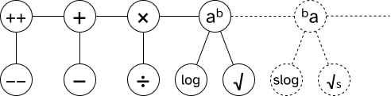

hyperoperations
daamath has a complete set of arithmetic operators: ++ −− + − × ÷ ^ log √
introduction
"daa, repeated addition is multiplication. repeated multiplication is exponentiation. whats the next level? and what do we have to repeat to get addition?"
the hyperoperation tower tells us everything we need to know

1 + 1 + 1 + … D times is 0 + D
B + B + B + … D times is B × D
B × B × B × … D times is Bᴰ
B ^ B ^ B ^ … D times is ᴰB
⋮
this is the basic idea of hyperoperations. repeating the previous operation D times gives you the next operator. this gives us the tower: succ → add → mul → pow → spow → …
each operator also has two inverses which solve for the left or the right operand. for example, in the equation R = B ^ D, the left inverse (root) solves for the left operand B = ᴰ√R while the right inverse solves for the right operand D = logB(R).
the left inverse and right inverse of addition are same (subtraction). the left inverse and right inverse of multiplication are same (divison). so we say they have only one inverse.
API implementation
daamath is implemented as a programming math library. this section covers the language-agnostic specification
succ(degree):
signature: 𝕎 → 𝕎 | ℤ → ℤ
exceptions: (none)
returns: 1 + degree
pred(result):
signature: 𝕎 → 𝕎 | ℤ → ℤ
exceptions: if signature is 𝕎 → 𝕎 and result is 0, raise a DomainError
returns: result − 1
add(base, degree):
signature: 𝕎, 𝕎 → 𝕎 | ℤ, ℤ → ℤ | ℝ, ℝ → ℝ | ℂ, ℂ → ℂ
exceptions: (none)
returns: base + degree
sub(result, degree):
signature: 𝕎, 𝕎 → 𝕎 | ℤ, ℤ → ℤ | ℝ, ℝ → ℝ | ℂ, ℂ → ℂ
returns: result − degree
mul(base, degree):
signature: 𝕎, 𝕎 → 𝕎 | ℤ, ℤ → ℤ | ℝ, ℝ → ℝ | ℂ, ℂ → ℂ
returns: base · degree
div(result, degree):
signature: 𝕎, 𝕎 → 𝕎 | ℤ, ℤ → ℤ | ℝ, ℝ → ℝ | ℂ, ℂ → ℂ
returns: result ∕ degree
pow(base, degree):
signature: 𝕎, 𝕎 → 𝕎 | ℤ, ℤ → ℤ | ℝ, ℝ → ℝ | ℂ, ℂ → ℂ
returns: base ^ degree
root(result, degree):
signature: 𝕎, 𝕎 → 𝕎 | ℤ, ℤ → ℤ | ℝ, ℝ → ℝ | ℂ, ℂ → ℂ
returns: result ^ (1 / degree)
log(result, base):
signature: 𝕎, 𝕎 → 𝕎 | ℤ, ℤ → ℤ | ℝ, ℝ → ℝ | ℂ, ℂ → ℂ
returns: log_base(result)
tetration, super-root, super-logarithm are highly debated topics, especially for non-integer numbers. there is no canonical agreed-upon definition for them yet so until this is resolved, daamath shall not maintain hyperoperations of n ≥ 4
argument order

at any hyperoperation level n, there are three operators:
Hₙ(base, degree) = result
Hₙ⁻ᴸ(result, degree) = base
Hₙ⁻ᴿ(result, base) = degree
this works well for sub and div but there is confusion for log and root. in usual math notation, we write logₙ(x) and ⁿ√x. julia follows the order of math notation and writes log(n, x). python and C follow the reverse order log(x, n). daamath follows the reverse order log(x, n) and root(x, n) because it is consistent with the order of arguments in sub and div, i.e. log(result, base) and root(result, degree)
type homomorphism
hyperoperations will return the same output type as its input type. if you pass in an integer, it will give an integer result. this is in contrast to dynamic type promotion in most languages, which eagerly promote integers to fractional numbers.
for example, in C, pow(2, 3) gives 8.0. in python, 2 ** -2 gives 0.25.
with daamath, dm.pow(2, 3) will give 8, and dm.pow(2, -2) will raise a DomainError because 0.25 cannot be represented as an integer.
the biggest consequence to this is that integer arithmetic stays as integer arithmetic. unsigned integer arithmetic stays as unsigned integer arithmetic.
daamath maintains four number types: ℕ₀, ℤ, ℝ, ℂ
notes
successor and predecessor are not the same as increment and decrement. the former two give a new answer, while the latter two imply mutating a variable. daamath implements the former two
actually, addition and multiplication have two inverses too. but since the left and right inverses do the same thing, we think of it as having one canonical inverse. the real hyperoperation tower ought to look like this:
the left and right inverse of multiplication are both division, but this isnt always true. for example, matrices may have two different division operators. one would multiply by the inverse of the left operand, another would multiply by the inverse of the right operand. but since daamath works with simple numbers, we do not make this distinction.
i dont typically see addition having two inverses..
rant
the motivation for this hyperoperation table was that i wanted to find a way to unify all the arithmetic operators i knew under one structure. i found the hyperoperation tower a year before i made daamath, and when i applied it, it was surprisingly reliable. it helped me order them, figure out the relationship between pow-log-root, and it also helped me figure out the argument order for log and root. turns out that i should just follow the order that sub and div follow, which is to always put result as first argument.
i should really try to clarify the meaning of B D R as soon as possible